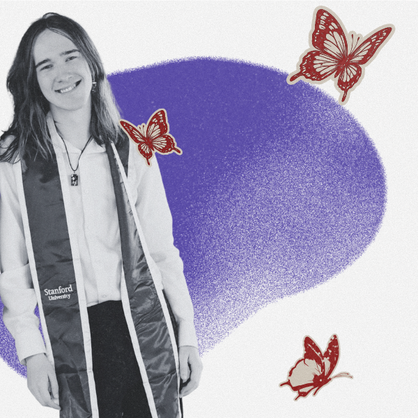
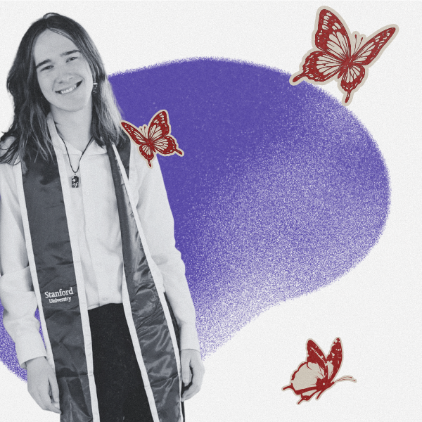

Myodyssey

The Concept
Myodyssey is a fully playable web MVP designed to evoke empathy for wildlife confronting rapid human development. Playing as a myopus (a small woodland lemming), the user embarks on a journey through an increasingly damaged forest to retrieve scarce Golden Moss for their sick partner.
Cross-Platform Technical Scoping: Early in ideation, we considered building a 1990s-style graphical point-and-click engine, but recognized that collaborating across mixed Windows and macOS developer environments would introduce severe tooling friction. I helped steer the concept toward a browser-based, interactive-text and point-and-click architecture in HTML/JS—ensuring seamless cross-platform development for our 5-person team and zero-friction browser access for non-gamers.
Game Economy & Environmental Storytelling: We structured the progression as an intentional game economy of Sources, Materials, and Exchanges. In Chapter 1, clickable narrative words act as material sources: players forage ingredients through interactive text to cook a vegetable stew and trade it with a beaver blocking the path deeper into the woods. In Chapters 2 and 3, embedded minigames serve as sources that gate progression while visually transitioning the world from an intimate, storybook forest into a polluted, human-altered landscape.
My Role & Process
Working across a 5-person team, I operated as both the initial mechanics architect and the glue uniting individual contributions into a single shipping product:
Role Structuring & Chapter 1 Engineering: I originated the core interactive-text point-and-click gameplay loop, helped define team role structures and task delegation, and engineered the entirety of Chapter 1 (the foraging, inventory, and vegetable stew puzzle).
Full-Package Integration & UI Unification: Because individual chapters were coded in parallel by different teammates, early builds suffered from fragmented layouts and inconsistent visual styles. I led the technical integration to combine all individual chapters into one continuous playable package and overhauled the UI styling—standardizing text boxes, typography, and the children's storybook aesthetic across Chapters 1, 2, 3, and the ending.
Original Soundtrack & Audio Mixing: To deepen the emotional arc from cozy woodland exploration to urgent environmental hostility, I composed, arranged, and mixed the original multi-track game soundtrack.


Testing & Iteration
Between Weeks 7 and 10, we conducted 9 formal playtests across 4 iterative versions with a spectrum of users—ranging from non-gamers and UX designers to hardcore action gamers. Every playtest directly informed mechanical, UI, and accessibility refinements:
Signifiers & Readability (v1 → v2): Early testers struggled to track which narrative passages they had already read and missed clickable object words. We implemented dynamic state styling to gray out previously read text, added visual icons to actionable areas, and introduced a persistent visual inventory system.
Hardware Parity & Scroll Ergonomics (v2 → v4): In playtests I conducted (including with slow-reading and mouse-wheel-constrained testers), we discovered that minigame speeds were inadvertently tied to monitor refresh rates and that long dialogue threads could trap users without scrollwheels. We decoupled minigame tick rates from display refresh rates, engineered automatic smooth-scrolling with visual padding on dialogue expansion, and rewrote puzzle microcopy for immediate clarity.
Inclusive & Accessible Design: Working closely with a colorblind teammate, we ensured zero puzzles relied solely on color differentiation. Following v3 playtester feedback on screen flashes during the Chapter 3 minigames, we also reduced flash intensity, shrank screen coverage, and throttled flash intervals to protect photosensitive players.
During mid-stage testing, a few testers who self-reported low affinity for animals questioned the abrupt, somber tone of the game's ending. Rather than diluting the narrative twist to satisfy every tester, we segmented feedback against our target persona: animal-empathetic narrative players consistently cited the ending as the most memorable, emotionally resonant moment of the experience. Retaining that creative conviction while fixing every usability friction point allowed the final release to land its intended message without compromise.